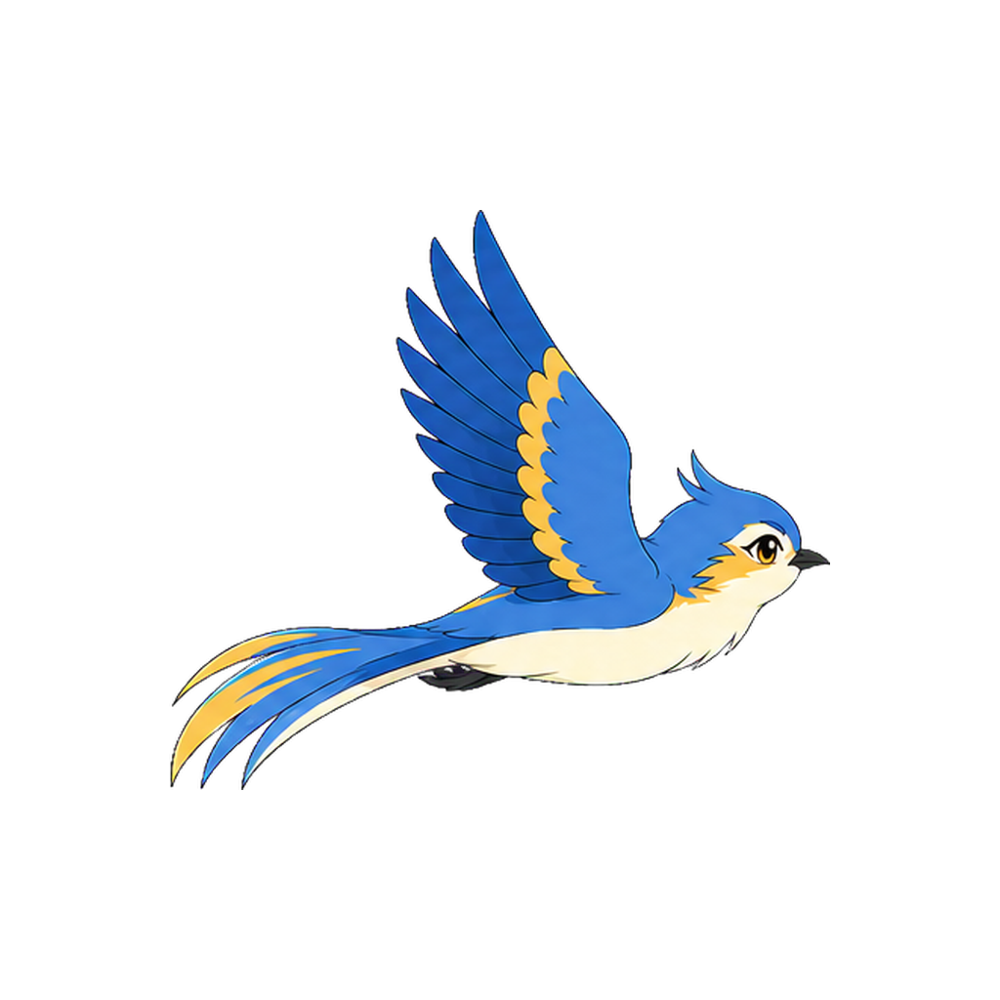

Cinematic descent · key-pose review
Follow the bird down.
Six major camera poses only. Transitional animation frames will be created after this movement direction is approved.

01 / 06
Peaceful sky glide
Scroll to follow the shot